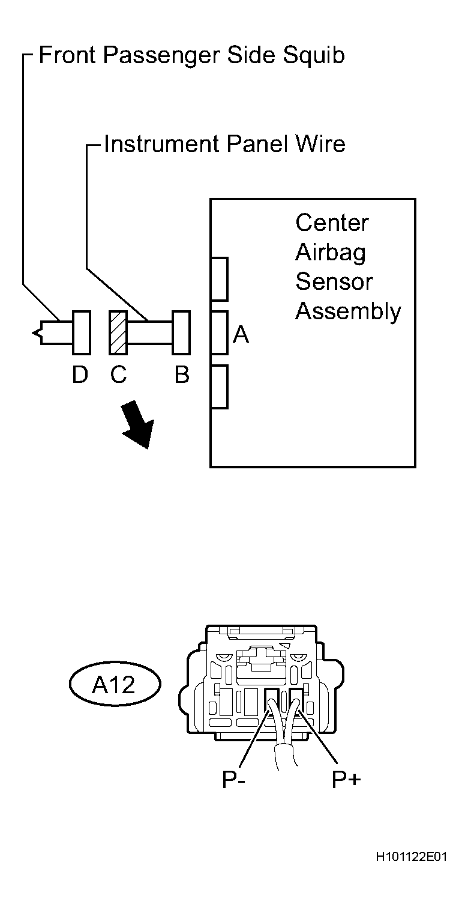

Inspection Procedure
- CHECK INSTRUMENT PANEL WIRE (FRONT PASSENGER SIDE SQUIB CIRCUIT)
- Turn the ignition switch to the LOCK position.
- Disconnect the negative (-) terminal cable from the battery, and wait for at least 90 seconds.
- Disconnect the connectors from the center airbag sensor assembly and the front passenger airbag assembly.
- Measure the resistance according to the value(s) in the table below.
Standard resistance
TESTER CONNECTION - SPECIFIED CONDITION (RESISTANCE)Tester Connection (Connector "C") Specified Condition A12-1 (P+) - A12-2 (P-) Below 1 Ω
NG : REPAIR OR REPLACE INSTRUMENT PANEL WIRE

Courtesy of © TOYOTA, LICENSE AGREEMENT TMS1002OK : Go to Next Step
- CHECK CENTER AIRBAG SENSOR ASSEMBLY
- Connect the connector to the center airbag sensor assembly.
- Using SST, connect terminals P+ and P- of connector "C".
SST 09843-18040
NOTE: Do not forcibly insert SST into the terminals of the connector when connecting. - Connect the negative (-) terminal cable to the battery, and wait for at least 2 seconds.
- Turn the ignition switch to the ON position, and wait for at least 60 seconds.
- Clear the stored DTCs in the memory (see DTC CHECK / CLEAR ).
- Turn the ignition switch to the LOCK position.
- Turn the ignition switch to the ON position, and wait for at least 60 seconds.
- Check for the DTCs (see DTC CHECK / CLEAR
).
OK:
DTC B0106/54 is not output.
HINT:
Codes other than code B0106/54 may be output at this time, but they are not related to this check.
NG : REPLACE CENTER AIRBAG SENSOR ASSEMBLY
 Courtesy of © TOYOTA, LICENSE AGREEMENT TMS1002
Courtesy of © TOYOTA, LICENSE AGREEMENT TMS1002OK : Go to Next Step
- CHECK FRONT PASSENGER AIRBAG ASSEMBLY (FRONT PASSENGER SIDE SQUIB)
- Turn the ignition switch to the LOCK position.
- Disconnect the negative (-) terminal cable from the battery, and wait for at least 90 seconds.
- Disconnect the SST from the connector "C".
- Connect the connector to the front passenger airbag assembly.
- Connect the negative (-) terminal cable to the battery, and wait for at least 2 seconds.
- Turn the ignition switch to the ON position, and wait for at least 60 seconds.
- Clear the stored DTCs in the memory (see DTC CHECK / CLEAR ).
- Turn the ignition switch to the LOCK position.
- Turn the ignition switch to the ON position, and wait for at least 60 seconds.
- Check for the DTCs (see DTC CHECK / CLEAR
).
OK:
DTC B0106/54 is not output.
HINT:
Codes other than code B0106/54 may be output at this time, but they are not related to this check.
NG : REPLACE FRONT PASSENGER AIRBAG ASSEMBLY
 Courtesy of © TOYOTA, LICENSE AGREEMENT TMS1002
Courtesy of © TOYOTA, LICENSE AGREEMENT TMS1002OK : PROBLEM SYMPTOMS SIMULATION